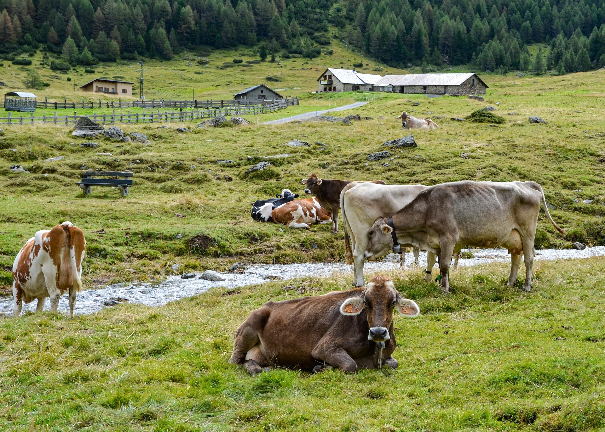

Welcome to
Fuller Fields Farms
Your trusted farm for quality crops and livestock based in Imo.
About Us
Rooted in the land
A family farm built on quality, care, and consistency.
We grow seasonal crops and raise livestock with a focus on freshness, dependable supply, and straightforward service for local customers and businesses.
Every order is handled with the same attention we give the farm itself, from planting to harvest and from pasture to delivery.